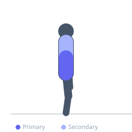

Exercise guide / TRX Fallout — Single Arm
TRX Fallout — Single Arm
A single-arm variation of the TRX fallout that adds an anti-rotation challenge to the anti-extension demand. Using one arm, the exerciser must resist both forward extension and lateral rotation of the torso, dramatically increasing the oblique and contralateral lat demand. This unilateral variation is used in advanced core training and rotation sport preparation.
Primary muscles
transverse abdominis
internal oblique
external oblique
Secondary muscles
latissimus dorsi
erector spinae
Stabilizers
deltoid anterior
Equipment
No Equipment (Bodyweight)

Starting position
- Hold both TRX handles in one hand (or use a single-handle attachment). Face away from the anchor. Lean forward at an angle, one arm extended forward with the TRX.
Setup
- Master the bilateral TRX fallout first. Start with a significantly more upright angle than the bilateral version — single-arm demands are substantially higher.
Steps
- Step 1: Hold the TRX single handle and face away from anchor. Establish a rigid plank with the working arm extended forward.
- Step 2: Allow the working arm to fall overhead, resisting both the forward extension and the rotation toward the working side.
- Step 3: Reach the end range that the core can hold without rotation or hip drop.
- Step 4: Pull back to the starting position. Complete all reps on one side, then switch.
Coaching cues
- Don't rotate — the torso faces the floor throughout the entire movement
- Squeeze the opposite glute harder as the arm extends further
- Think of the return as pulling the floor toward you with your lat
Breathing
- Inhale as you extend overhead. Exhale as you pull back.
Range of motion
- Extend as far overhead as the core can hold with no torso rotation and no hip drop.
Tempo
- 3s fallout, 1s hold, 2s pull back.
Common mistakes
- Rotating toward the working arm — the core must resist this rotation
- Using too steep a lean angle before the movement is mastered
- Rushing the movement — slow and controlled is essential
Safety
- This is a high-demand exercise — only attempt after mastering bilateral TRX fallout
- Shoulder discomfort in the extreme overhead position warrants reducing range
Training
- strength: 4–8 reps
- strength: 2–3 sets
- Rest: {'strength': 60}